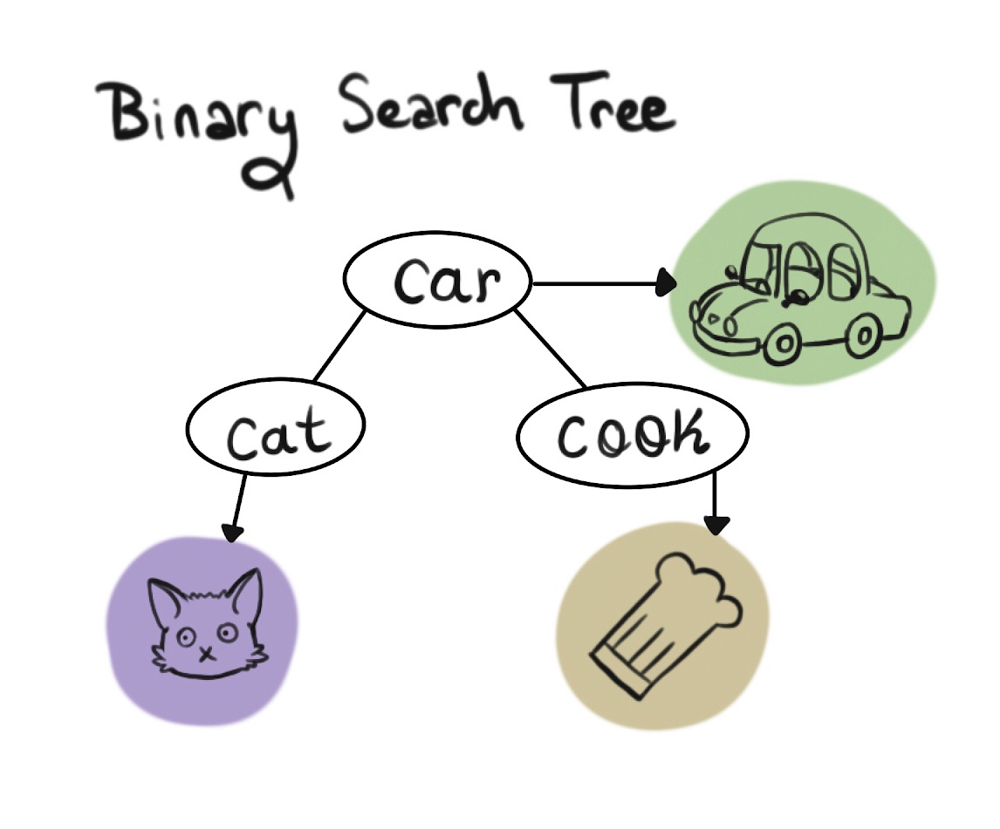
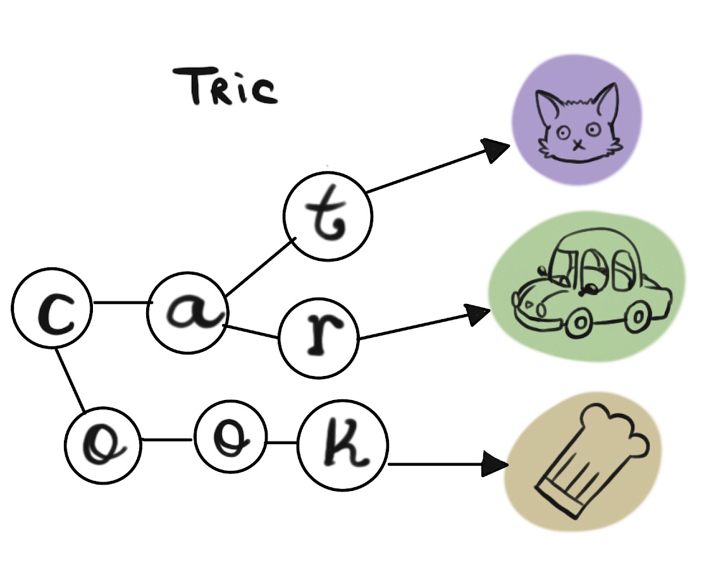
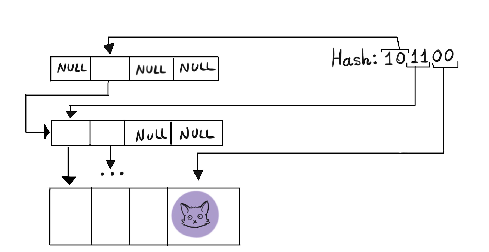
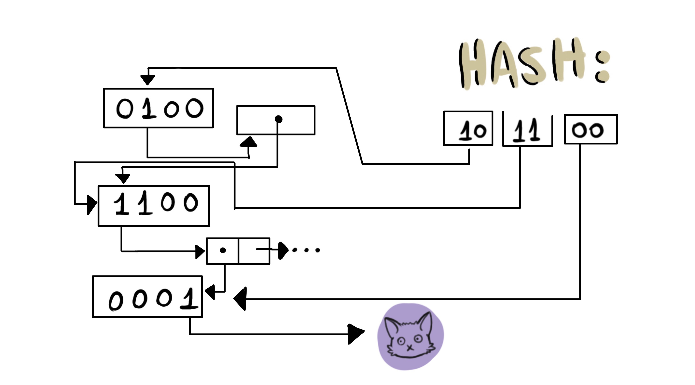
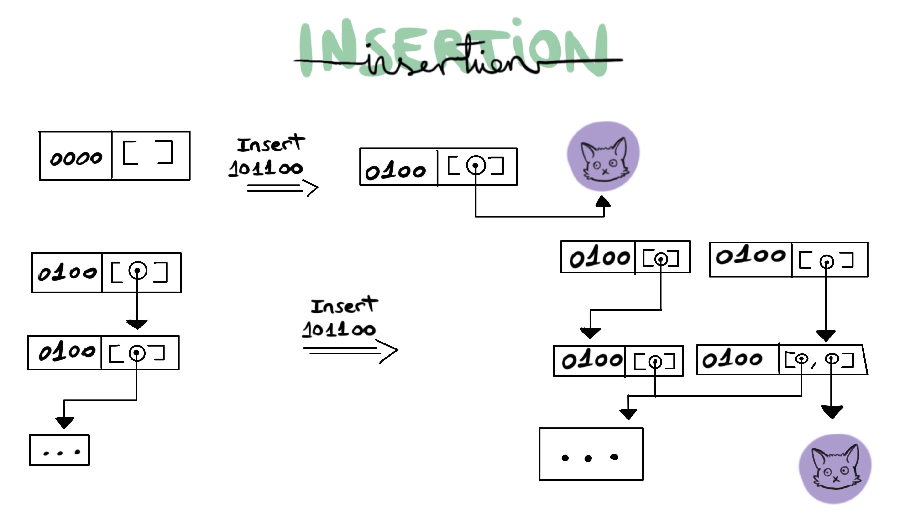

HAMTers for a day
Borja Lorente
Created: 2018-06-01 Fri 15:38
Prelude
- Author: Borja Lorente (blorente.me)
- Art: Nayla Novotny (artstation.com/naylanovotny)
Get the slides blorente.me/HAMTs
The problem:
How do we implement Associative Arrays?
In computer science, an associative array … is an abstract data type composed of a collection of (key, value) pairs, such that each possible key appears at most once in the collection. – Wikipedia
The solution: Hash tables

Thank you for coming
OK, but what about functional languages?
Persistent data structures

Hash tables do not persist well
Trees persist well, right?
(Self Balancing) Binary Search Trees

Red-Black Trees in a Functional Setting (Okasaki, 1999) Purely Functional Data Structures (Okasaki, 1999)
Tries

Tries
Good
- Lookup time is independent of the size of the set.
- Index nodes are really small, since we don't store whole keys.
- The internal structure models the domain.
- Useful information with partial traversal (automplete).
Bad
- Deep trees in degenerate cases.
- Bad $ locality.
- It's hard to find a worse choice for a name. It's a bad name.
Hash Array Mapped Tries
An implementation of Tries with minimal tradeoffs and good persistence characteristics.
As seen on:
Implementation (Naive)

Implementation (Naive)

Implementation (Compresed)

Insertion

Collission
Performance (Common ops)
| Operation | Speed |
|---|---|
| empty | O(1) |
| insertion | O(d) |
| lookup | O(d) |
| deletion | O(d) |
| iterate | O(n) |
Where:
d: depth of the new node
(bounded by
hash length / bits per level)- n: number of elements in the collection
Performance (other)
- Most of the time, lookups are O(d) since there are usually no collissions.
- Depends on how well the hash function distributes the elements.
- Relies on
popcountto lookup efficiently. - Cheap persistence, since index nodes are small.
Improvements
Cache-Aware Lock-Free Concurrent Hash Tries (Prokopec, Bagwell, Odersky 2011)
- An implementation of HAMTs to support concurrent lock-free atomic operations.
- Uses an intermediate node between every level to operate atomically on.
Optimizing hash-array mapped tries for fast and lean immutable JVM collections (Steindorfer, 2015)
- Exploiting locality by separating bitmasks by kind. Index nodes have 2 bitmasks and arrays.